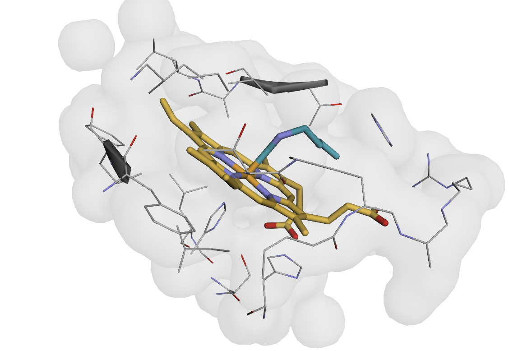
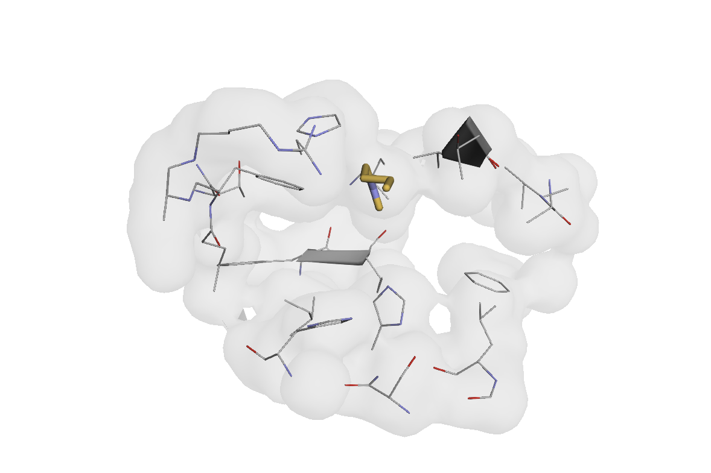

Note
Go to the end to download the full example code.
Annotating and Saving Protein Structures#
This example walks through how to add custom annotations to AtomArrays, visualize them, and save them for later use.
Prerequisites: Familiarity with Loading and Visualizing Protein Structures for basic structure loading and exploration.
{kind=link}

Visualization of heme-binding pocket atoms (within 6Å of heme ligand) in myoglobin.#
Setup and Structure Loading#
Let’s start by loading a protein structure that we’ll annotate. We’ll use the same myoglobin structure from the loading example:
import os
import tempfile
import biotite.structure as struc
import numpy as np
from atomworks.io import parse
from atomworks.io.utils.io_utils import to_cif_file
from atomworks.io.utils.testing import get_pdb_path_or_buffer
from atomworks.io.utils.visualize import view
# sphinx_gallery_thumbnail_path = '_static/examples/annotate_and_save_structures_01.png'
# Load myoglobin structure with heme
example_pdb_id = "101m" # Myoglobin with heme
pdb_path = get_pdb_path_or_buffer(example_pdb_id)
# Parse the structure (no need to add missing atoms, since we would just remove them in the following step)
atom_array = parse(pdb_path, add_missing_atoms=False, fix_formal_charges=False)["assemblies"]["1"][0]
print(f"Loaded structure with {len(atom_array)} atoms")
print(f"Chains: {np.unique(atom_array.chain_id)}")
# Clean up coordinates (remove any NaN values, if present)
# (NaN coordinates will break our later step when we create a CellList with Biotite)
valid_coords_mask = ~np.isnan(atom_array.coord).any(axis=1)
atom_array = atom_array[valid_coords_mask]
print(f"After removing NaN coordinates: {len(atom_array)} atoms")
Adding Custom Annotations#
Now let’s add custom annotations to mark different types of atoms. We’ll use pocket identification as an example to demonstrate how to create meaningful structural annotations for many ML and general bioinformatics applications.
Step 1: Identify Structural Features (Pocket Identification)#
Let’s efficiently identify the heme-binding pocket using spatial distance cutoffs with Biotite’s CellList class:
# Find atoms within 6 Angstroms of the heme using a spatial cell list
cell_list = struc.CellList(atom_array.coord, cell_size=6.0)
heme_coords = atom_array.coord[atom_array.res_name == "HEM"]
print(f"Found {len(heme_coords)} heme atoms")
# Get all atoms within 6Å of any heme atom
pocket_mask = cell_list.get_atoms(heme_coords, 6.0, as_mask=True)
pocket_mask = np.any(pocket_mask, axis=0) # Combine results for all heme atoms
print(f"Found {np.sum(pocket_mask)} atoms within 6Å of heme")
# Visualize the pocket region (always a helpful sanity-check, and trivial with AtomWorks)
print("\nVisualizing pocket region (all atoms within 6Å of heme):")
view(atom_array[pocket_mask])
Step 2: Create Annotations from Identified Features#
Now we’ll convert our pocket identification into an explicit AtomArray annotation and visualize it:
# Boolean annotation for pocket residues (excluding heme itself)
is_pocket = pocket_mask & (atom_array.res_name != "HEM")
atom_array.set_annotation("is_hem_pocket", is_pocket.astype(bool))
# Boolean annotation for heme atoms
is_heme = atom_array.res_name == "HEM"
atom_array.set_annotation("is_heme", is_heme.astype(bool))
print(f" - Pocket atoms: {np.sum(atom_array.is_hem_pocket)}")
print(f" - Heme atoms: {np.sum(atom_array.is_heme)}")
# Visualize just the pocket residues
print("\nVisualizing annotated pocket residues:")
view(atom_array[atom_array.is_hem_pocket])

Saving Annotated Structures#
Now let’s save our annotated structure. In many use cases we may want to save our modified AtomArray to disk and later load again, preserving our original annotations.
AtomWorks provides two methods to do so:
Saving to CIF, adding extra annotations directly into the file |
Standard Python object pickling (which may be sensitive to versions, libraries, etc.) |
Saving to CIF Files#
CIF files are the standard for structural data and allow us to store arbitrary annotations and categories.
# Create temporary directory for our files
temp_dir = tempfile.mkdtemp()
print(f"Working in temporary directory: {temp_dir}")
# Save to CIF file with custom annotations specified
cif_path = os.path.join(temp_dir, "annotated_structure.cif")
custom_fields = ["is_hem_pocket", "is_heme"]
saved_cif_path = to_cif_file(
atom_array,
cif_path,
extra_fields=custom_fields,
)
print(f"Saved CIF file to: {saved_cif_path}")
print(f"File size: {os.path.getsize(saved_cif_path) / 1024:.1f} KB")
Note on Biological Assemblies and CIF Saving#
In some cases, you may find that to_cif_file reports an error when the structure represents a biological assembly containing multiple copies of the asymmetric unit. The reason for this error is that AtomWorks builds the biological assembly and explicitly represents every atom; we can’t then reverse that process since we may be left with ambiguous bond annotations (e.g., no way to distinguish between multiple copies of “Chain A”). The best solution is to either (a) set the chain_id to the chain_iid (which resolves the ambiguity) or (b) simply save the object using a pickle.
More rigorous solutions exist; a helpful place for contributions!
Alternative Storage Options#
For Python-specific workflows, you can also save structures as pickle files to preserve exact data types, though CIF files are recommended for interoperability and long-term storage.
Loading Annotated Structures#
When we load pickled AtomArray’s, we should restore our original object out-of-the-box with all annotations preserved.
When loading from CIF, however, we may need to grapple with data type issues, since within CIF files all fields are considered strings.
In the future, we would like to automatically detect annotation data types during loading (and/or allow specification of data types) - we would love contributions and a PR!
Loading from CIF Files#
from atomworks.io.utils.io_utils import load_any
# Load from CIF file
loaded_from_cif = load_any(saved_cif_path, extra_fields="all")[0]
print("Loaded from CIF file:")
print(f" Atoms: {len(loaded_from_cif)}")
print(" Custom annotations:")
for annotation in loaded_from_cif.get_annotation_categories():
if annotation in custom_fields:
dtype = getattr(loaded_from_cif, annotation).dtype
print(f" ✓ {annotation} ({dtype})")
Handling Data Type Conversions#
As we can see above, when boolean annotations are saved to CIF files, they become string representations (“True”/”False”). Here’s how to convert them back (we welcome contributions to automate this process and/or allow explicit specification):
# Convert string booleans back to actual boolean type
def fix_boolean_annotation(atom_array: struc.AtomArray, annotation_name: str) -> struc.AtomArray:
"""Convert string boolean annotations back to bool type."""
string_values = getattr(atom_array, annotation_name)
boolean_values = string_values == "True"
atom_array.del_annotation(annotation_name)
atom_array.set_annotation(annotation_name, boolean_values)
return atom_array
# Fix boolean annotations
loaded_from_cif = fix_boolean_annotation(loaded_from_cif, "is_hem_pocket")
loaded_from_cif = fix_boolean_annotation(loaded_from_cif, "is_heme")
print("\nAfter conversion:")
print(f" is_hem_pocket: {loaded_from_cif.is_hem_pocket.dtype}, {np.sum(loaded_from_cif.is_hem_pocket)} True values")
print(f" is_heme: {loaded_from_cif.is_heme.dtype}, {np.sum(loaded_from_cif.is_heme)} True values")
print(f" Sample values: {loaded_from_cif.is_hem_pocket[:3]}")
# Clean up temporary files
import shutil
shutil.rmtree(temp_dir)
print(f"✓ Cleaned up temporary directory: {temp_dir}")
print("✓ Successfully demonstrated structure annotation, saving, and loading!")